Courses
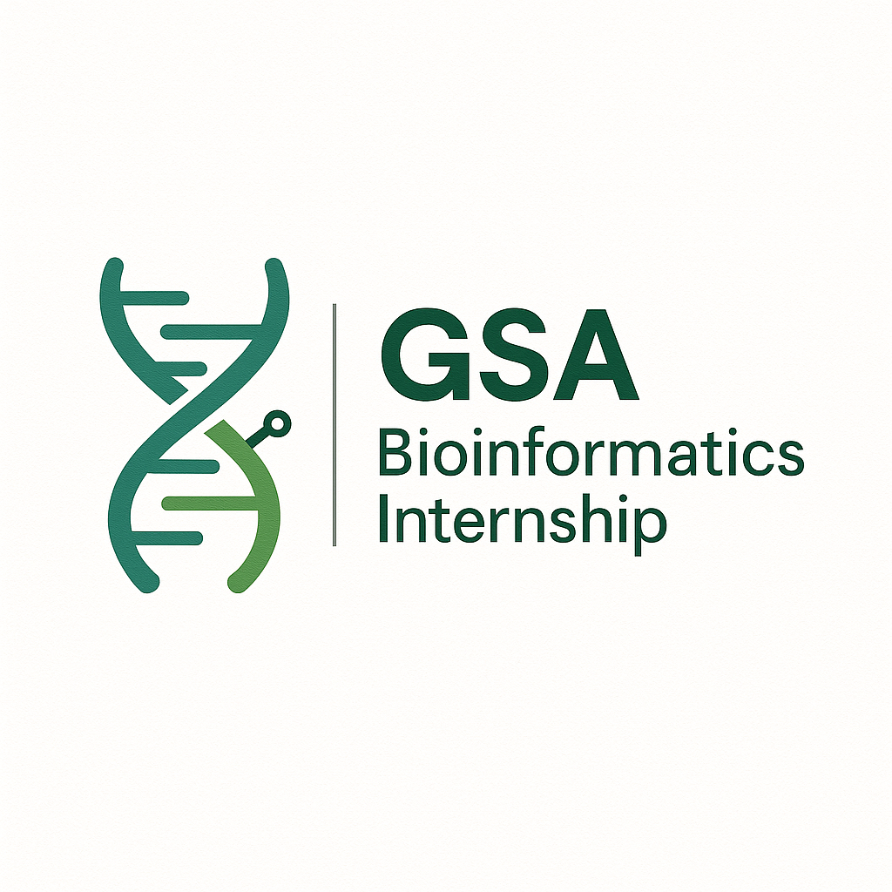
GSA Bioinformatics Internship
A collaborative initiative by GNOBB, ASI School of Life, and SPSB. As Program Lead, I oversee this internship bridging theory and real-world research through hands-on projects mentored by experts from DeepBio Limited and Big Bioinformatics Lab. The program also features a Bioinformatics Camp for school students, where interns gain leadership experience through mentoring and public engagement.
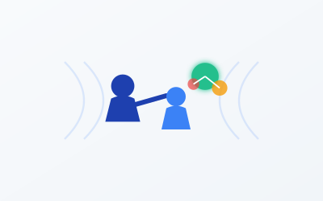
Bioinformatics Mentorship Program (BMP)
Our flagship 12-week intensive research program designed for serious researchers. Master NGS data analysis lifecycle—from raw sequencing data to publication-ready manuscripts and polished figures. Includes personalized mentorship, HPC access, and proprietary research pipelines.
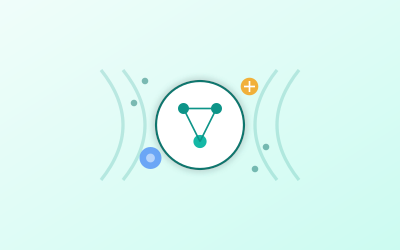
No-Code & Agentic AI for Life Sciences
A 4-week live program focused on leveraging Generative and Agentic AI tools to automate biomedical research workflows. Learn to use Claude, NotebookLM, and Gemini for literature reviews, drug discovery, and Omics analysis—100% no-code.
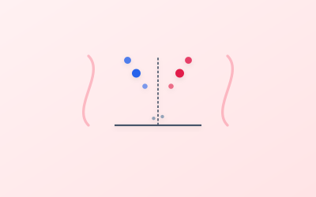
Bulk RNA-Seq Analysis for Absolute Beginners
Unlock the secrets of the transcriptome. Designed for biologists with zero programming experience, this course teaches the tools and statistical rigor required to turn raw sequencing data into publication-quality insights—covering Linux, R, DESeq2, and Pathway Analysis.
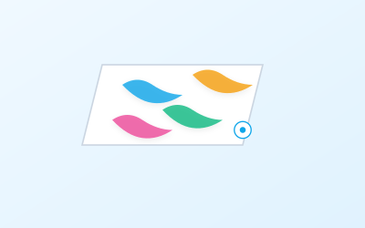
Single-Cell RNA-Seq Analysis for Absolute Beginners
Master the resolution of individual cells. This course guides beginners through the complete single-cell workflow—from quality control and batch integration to clustering, cell-type annotation, and trajectory analysis using the scverse ecosystem.
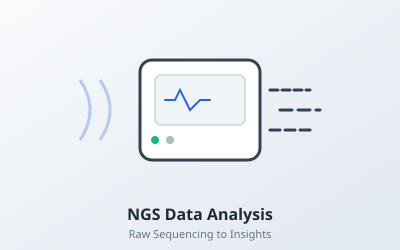
NGS Data Analysis for Absolute Beginners
A foundational course for mastering Next-Generation Sequencing (NGS) data. Learn the end-to-end workflow from raw FASTQ files to variants and expression matrices, covering quality control, read mapping, and downstream analysis using industry-standard tools.
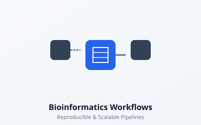
Reproducible Bioinformatics Workflows: Ideation to Execution
A 3-day intensive workshop on building reproducible and scalable bioinformatics pipelines. Participants learn to orchestrate complex genomic workflows using industry-standard tools like Nextflow, Snakemake, and Docker, ensuring computational research is portable and transparent.
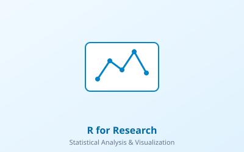
Statistical Analysis with R for Research
A comprehensive course teaching statistical analysis using R for researchers. Covers data manipulation, visualization, hypothesis testing, regression analysis, and reproducible research workflows — equipping researchers with the practical R skills needed to analyze and interpret their data.
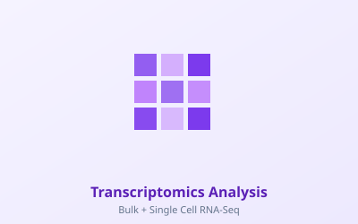
Transcriptomics Data Analysis (Bulk + Single Cell)
A live, instructor-led training program covering best practices in high-throughput RNA-seq data analysis. Participants learn to independently analyze gene expression datasets using R, Bioconductor, and the scverse ecosystem — from raw counts to biological interpretation.
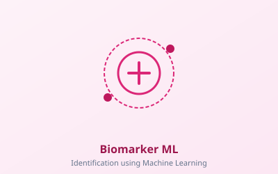
Biomarker Identification using Machine Learning
Hands-on course applying advanced machine learning and bioinformatics techniques to identify novel biomarkers from high-dimensional biological data. Focuses on cancer genomics using TCGA data to discover clinically relevant biomarkers for diagnosis, prognosis, and treatment selection.
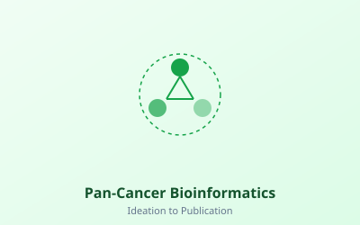
Pan-Cancer Bioinformatics with R: Ideation to Publication
An intensive training program guiding participants through the complete journey of pan-cancer analysis — from research idea to publication. Covers TCGA data access, expression, survival, mutation, and immune analyses, multi-omics integration, publication-ready visualization, and manuscript preparation.
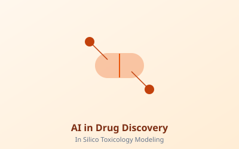
AI in Drug Discovery: In Silico Toxicology Modeling
A one-day hands-on workshop introducing AI-powered toxicology modeling for drug discovery. Participants build machine learning models to predict compound toxicity, classify molecules, and analyze structure–activity relationships using real-world cheminformatics datasets.
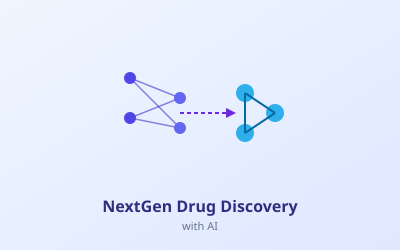
NextGen Drug Discovery with AI
A program on AI-driven drug discovery, covering how machine learning and generative AI accelerate target identification, molecule design, and virtual screening in modern pharmaceutical research.
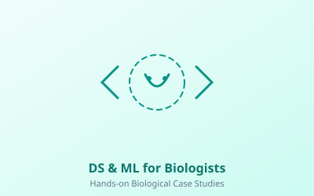
Data Science and Machine Learning for Biologists
Taught at CBLAST, University of Dhaka, this course introduces biologists to data science and machine learning through hands-on biological case studies. Covers data processing, visualization, and analysis using Python and R, with applications of supervised and unsupervised learning in genomics, transcriptomics, and health data.
Pipelines
Videos
R for Research
Video lectures covering R programming fundamentals, data manipulation, statistical testing, and visualization for researchers.
Machine Learning for Bioinformatics
Hands-on video tutorials applying machine learning techniques to biological and genomic datasets.
RNA-Seq Analysis with R
Step-by-step video tutorials on bulk RNA-seq analysis using R and Bioconductor, from raw counts to biological interpretation.
AI for Drug Discovery
Video series introducing AI-powered approaches to drug discovery, including toxicology modeling and structure-activity analysis.
Cancer Bioinformatics
Video tutorials on cancer genomics analysis, covering TCGA data access, mutation analysis, survival modeling, and multi-omics integration.
Academic Writing
Video lectures on scientific writing, manuscript preparation, and publishing in peer-reviewed journals.
Python for Health Data Analytics
Video tutorials on using Python for health data analysis, covering data wrangling, visualization, and statistical methods for public health and clinical datasets.